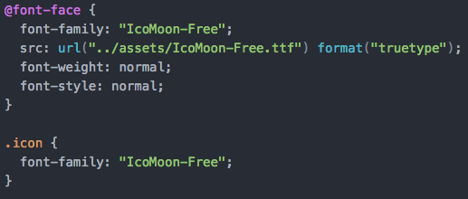

Tagesjournal 20.12.
Notizen
- @font-face
CSS Attribut - Schirftformate
- Socialmedia icons mit IcoMoon
Selbstständig verfasster Text mit neuen Erkenntnissen der Unterrichtseinheit
@font-face
Mit @font-face lassen sich Fonts einbinden
Schriftformate
TrueTypeFonts (TTF)-> Wird oft von Microsoft und Mac verwendet The Web Open Font Format (WOFF) -> TrueType und OpenType format The Web Open Font Format 2.0 (WOFF 2.0) -> TrueType und OpenType format, besser komprimiert als WOFF 1.0 Embedded OpenType Font (EOT) -> Von Microsoft erstellte kompakte Form von OpenType Fonts, nur in IE verfügbar
Socialmedia Icons
Mit dem eingebundenen @font-face sind icons als Schriftarten verfügbar